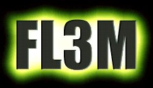

F L 3 M
- 9 9 -
Ok we no this is a lil bit outa date but we thought it should be talked about...
Packet Stom Security yes the evil JP deal
JP is that guy from antionline who i think loves ruinin poeples lives or personal property, JP took down PSS i think to be a real ass, PSS was loved by millions Ken had New exploits cool programs from unix to windows and i think that made everyone very mad when they heard about pss goin down, well there is hope to this story, we have copy's of the lost data and have several sites to choose from i will list them below...
KEVIN MITNICK you are still remembered
KeebLer Elves / N.Y.S / HiP / bl0w team / Attrition / Th3 / Lyrikal Crew
FREE KEVIN! Hackedworld some files Lyrikal Unix has all